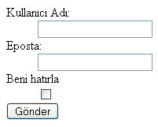
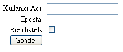

Kullanıcı ile irtibatımızı sağlayan, sayfalarımıza interaktiflik kazandıran html elementleridir formlar. Bu makalede hep beraber Formların nasıl CSS ile tablo kullanılmadan oluşturulduğunu göreceğiz.
CSS ile daha erişilebilir ve esnek yapılı form kodlamayı iki kısma ayırabiliriz. Formların etiketlerinin yerlerini planlamak(konumlandırmak) ve form elementlerini güzelleştirerek daha göze hoş gelen ve işlevsel bir hala getirmek.
Basit Form yapılarının CSS ile kodlamak
Basit bir form yapısını planlayarak başlayalım. Web sitelerinde en çok kullanılan formlar kullanıcı giriş formlarıdır. Beraberce CSS ile planlanmış bir kullanıcı girişi formu yapalım. Xhtml kodunu yazalım.
<form action="/gonder/login"
id="kullaniciGiris" method="post">

Bu tip küçük form sayfalarında tanım listelerinin(dl, dd ve dt) kullanılması düzen ve kullanım kolaylığı açısından çok önemlidir.
Şimdi CSS ile form elemanlarını yerlerine koyalım.
Bu formu tablo ile yaptığımız gibi yanyana koymak için genişlik ve float tanımı yapıyoruz.
form dt { width: 8em; float: left;
text-align: right; margin-right: 0.5em; display: block; }
Sağdaki form elemanları ile soldakiler arasına boşluk bırakmak için genişlik değeri veriyoruz.
form dd { margin-left: 4.5em; }

Bir çok sitede kullanılan kullanıcı giriş(login) formlarını CSS yardımı ile kodladık. Şimdi görünüşünü düzeltelim.
Metinlerimizi font tanımı yapalım:
form dt { width: 8em; float: left;
text-align: right; margin-right: 0.5em; display: block; font:12px Arial, Helvetica, sans-serif; }
Metin giriş alanlarını standart görünümünden çıkarıp kendi istediğimiz renklere büründürelim.
<dd><input name="ad" type="text"
class="metinAlani" id"ad" /> :::css input.metinAlani { color: #781351; background-color:
b5c9e2; border: 1px solid #31557f; font:10px Arial, Helvetica,
sans-serif; }
Gönder düğmesinin şeklini değiştirelim. Burada renk uyumu form alanlarımızın daha hoş görünmesi için önemlidir. Renk seçimi yaparken genelde site bütünlüğünü bozmamak için site genel renk değerleri seçilir. Ama bu bir kural değildir.
<dt><input type="submit" class="gonder"
value="Gönder" /> :::css
input.gonder { color: #224059; background-color: #b5c9e2; border-top: 2px #cce3ff solid; border-left: 2px #cce3ff solid; border-bottom: 2px
31557f solid; border-right: 2px #31557f solid; font:bold 12px Arial,
Helvetica, sans-serif; }
Yukarıda gönder düğmesinin kenarlık renk seçimini yaparken sağ ve alt kısma daha koyu, sol ve üst kısma daha açık renk vererek düğmemize 3 boyutlu bir görünüm kazandırdık.
Şimdide form alanını bir bütün haline getirelim ve forma bir başlık yazalım. Bu işlemler için Html'in
Yorumlar !